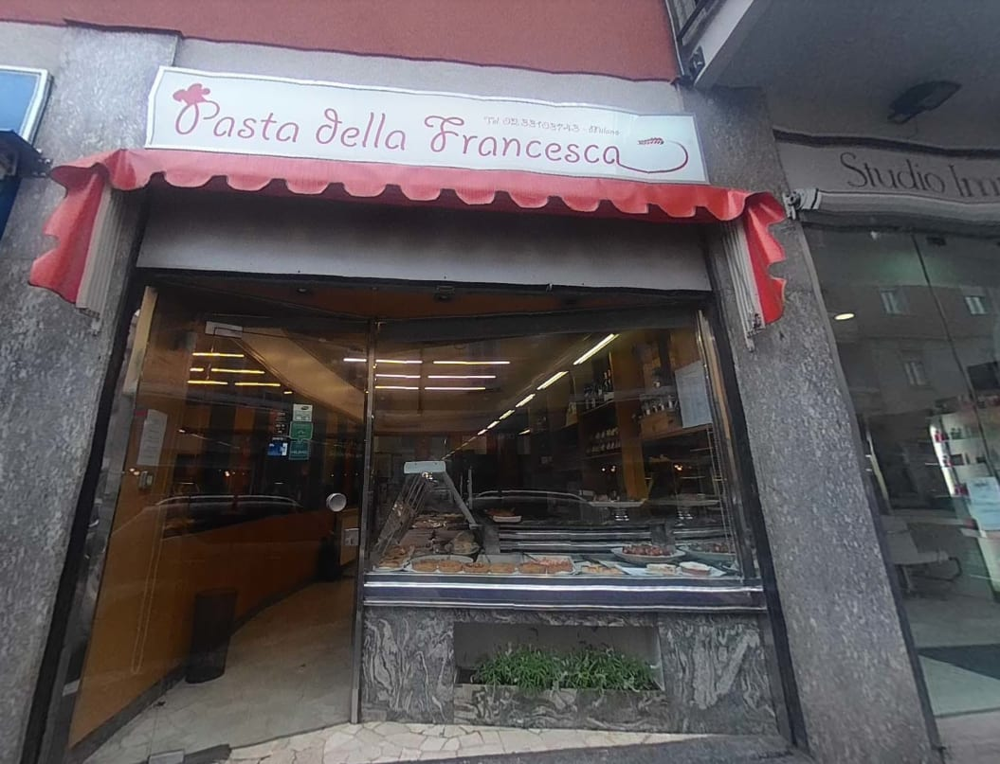
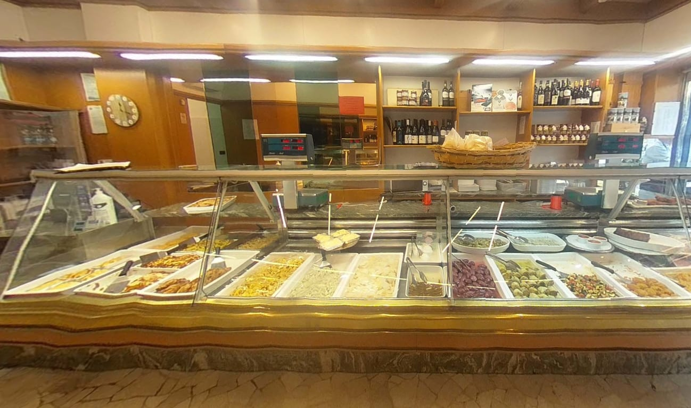
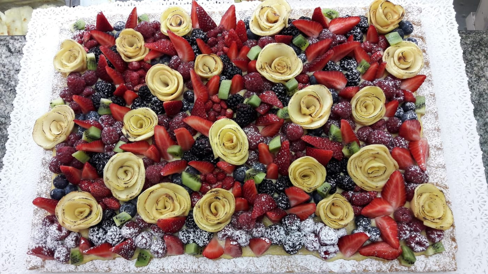
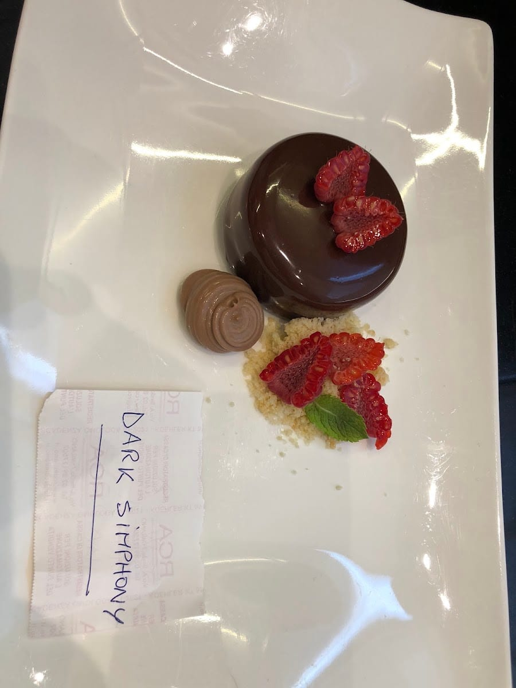
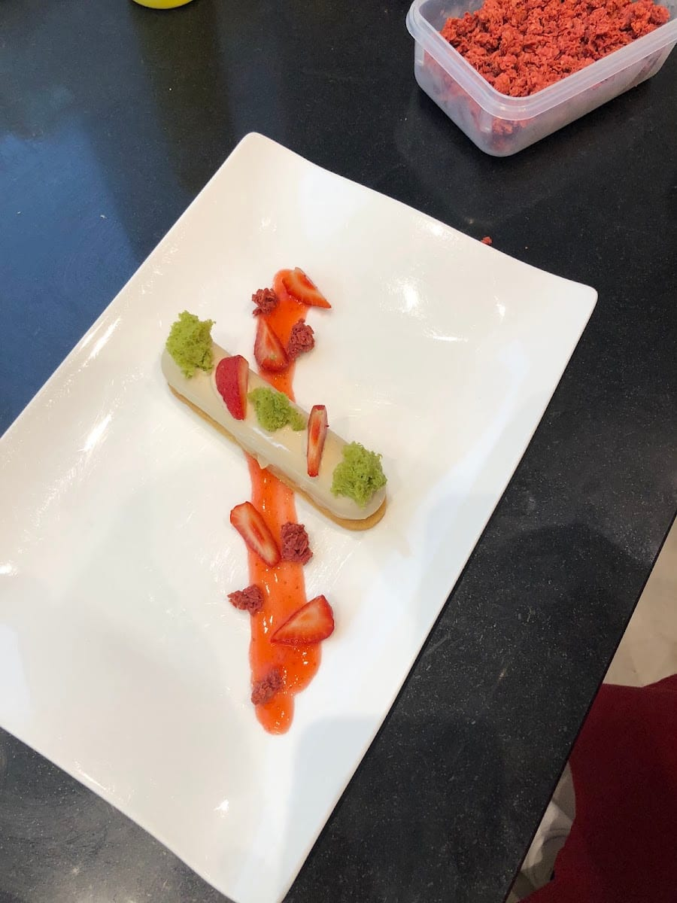

La pasta fresca
Ravioli di spinaci e ricotta, gnocchi al pomodoro, tortelli e tagliatelle: tirata a mano, da cuocere in pochi minuti a casa.
Via Piero della Francesca · Sempione
la pasta fresca di famiglia
Una bottega di famiglia, di quelle poche rimaste a Milano. Qui la pasta fresca si fa in casa ogni giorno — ravioli, gnocchi, tortelli — insieme ai piatti pronti, ai dolci e alle torte. E sì, il nome viene dalla via.


La bottega
Pasta della Francesca è una bottega di famiglia: una di quelle poche, a Milano, dove la pasta fresca si tira ancora in casa, ogni giorno, con le mani.
Ci si passa per un vassoio di ravioli, e si esce con anche i piatti pronti del giorno e una torta. Cibo ottimo, ambiente accogliente, e diversi menù ogni giorno — dicono i clienti che ci tornano ogni settimana.
Cosa trovi in bottega
Ravioli di spinaci e ricotta, gnocchi al pomodoro, tortelli e tagliatelle: tirata a mano, da cuocere in pochi minuti a casa.
Diversi menù ogni giorno: primi, secondi e contorni già pronti, come li faresti a casa — se solo avessi tempo.

Torte di frutta, dolci al cucchiaio, piccola pasticceria: per chiudere il pranzo, o per una festa.
«Anche il pane è buonissimo», scrivono. Perché una tavola apparecchiata comincia sempre da lì.
Tutto da asporto, con consegna a domicilio. Chiama e dicci cosa ti serve per stasera.
Il nome è un piccolo scherzo di quartiere: la bottega è in Via Piero della Francesca, e allora tanto vale prenderla con leggerezza. Del resto, tirare la sfoglia sottile e regolare, giorno dopo giorno, un po' un'arte lo è davvero.
In vetrina


Le voci
Attività di famiglia, una delle poche rimaste a Milano. Ambiente pulito e accogliente, cibo ottimo, diversi menù tutti i giorni. I loro gnocchi al pomodoro sono buonissimi, anche il pane.
Federica Micheli · ★★★★★
YUM! I had the spinach and ricotta ravioli and it was delicious. Great portion size and such friendly customer service.
Alex Jovanovski · ★★★★★
Always gorgeous food. We come every week. So yum, and friendly staff.
VL · ★★★★★
Ottimi prodotti, tanta scelta, personale gentile e disponibile. Da provare!
Recensione Google · ★★★★★
Dove siamo
La mappa è di Google: aprendola, Google riceve il tuo indirizzo IP e può usare i suoi cookie.
FAQ
In Via Piero della Francesca 20, in zona Sempione a Milano. Il nome, sì, viene dalla via.
Pasta fresca fatta in casa — ravioli, gnocchi, tortelli, tagliatelle — i piatti pronti del giorno, i dolci e le torte, e il pane. Diversi menù ogni giorno.
Sì: si può ordinare da asporto e c'è la consegna a domicilio. La pasta fresca la trovi anche da portare a casa e cuocere in pochi minuti.
Da martedì a giovedì 9:00–13:30 e 16:00–19:00, venerdì e sabato 9:00–13:30 e 15:30–19:00. Domenica e lunedì chiuso.